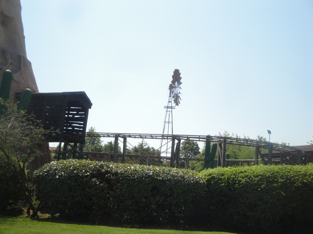

| |
Miniera d'Oro del West Review

Once you get in the seat, you pull down the lap bar, and away you go! First up, some straight track. Now granted, its very pretty. It's got some decent western theming along with some fake cactus around. I like that. Eventually, we head around a turn and go through some more straight track. Ok. Seriously, is this an outdoor dark ride cause there's literally nothing else to this ride. Well, we head around another turn, which actually apprently has some banking. It's not much. But its a fun little touch. We then head inside a shack and up a lifthill. Yay!! Hopefully good stuff will come now. We roll around a turn and into another shack, which actually turns out to be a tunnel. TAKE THE TUNNEL!!! The tunnel shows off some fun green and purple lights. I always enjoy those. =) We then head outside and around another long turn. Yeah. This is really just an outdoor dark ride. Finally!! A drop!! We dip down and...TRIM BRAKE!! And this doesn't just slow us down. It completely stops us. And sorry, this really pisses me off. I know its just a kiddy coaster, but come on. You're afraid of going 8 mph!? That's just sad. Anyways, we continue on our way through some more turns. We some more theming including a plastic horse with a plastic Native American on it. Hi Ceaser. Anyways, we head into another tunnel for another lifthill. That goes by quick, we exit, go through some straight track, and down another drop. And this one is actually a drop. No trims or anything. YAY!!! It also has these flashing lights that makes it more fun. We then rise up back outside. Hey, just be happy we did something besides look around on this ride. But yeah, from here, its just straight track and a couple turns into the station. It's mostly an outdoor dark ride. But for being a Wacky Worm, it's fun as it does have theming and is just unique in general.
4/10
Location: Fiabilandia
Opened: 2003
Built by: Pinfari
Last Ridden: June 19, 2012
Miniera d'Oro del West Review



|